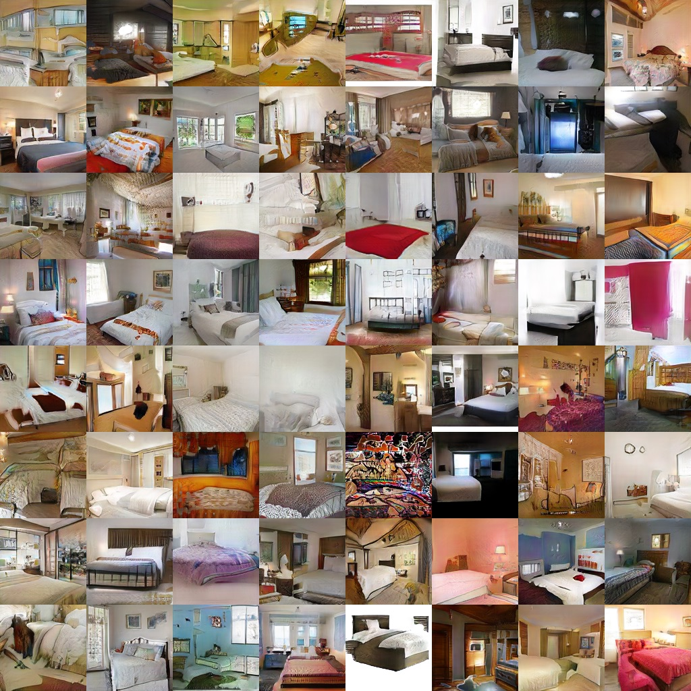
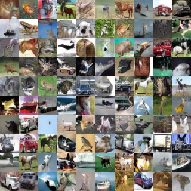
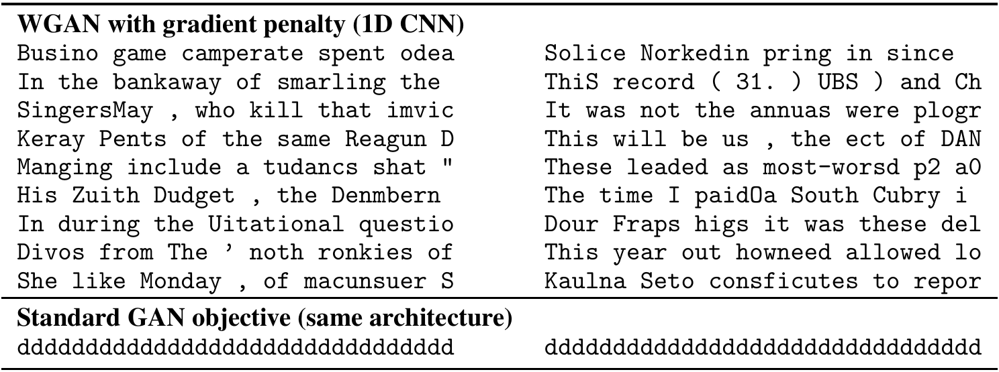

Wasserstein Generative Adversarial Networks (basic and improved)
Мотивация
У GAN-ов есть много разных проблем, среди которых: 1) высокая чувствительность к архитектурам, 2) необходимость использования множества “хаков” для того, чтобы получить хорошие результаты. На GAN-ы можно смотреть со следующей точки зрения: есть два распределения — настоящие примеры и сгенерированные, — и дискриминатор пытается измерять некоторое расстояние между этими распределениями (см. далее), а генератор пытается это расстояние минимизировать. Авторы считают, что в проблемах выше виноват выбор расстояния, и предлагают другое.
Математика
Расстояния между распределениями
Рассмотрим класс GAN-ов, который называется \(f\)-GAN-ы, туда попадают и vanilla GAN (самый первый), и DCGAN, и Improved GAN. Можно показать (см. статью про f-GAN-ы), что их генератор на самом деле пытается минимизировать \(f\)-дивергенцию между реальными данными и сгенерированными им примерами, а дискриминатор вычисляет эту \(f\)-дивергенцию. \(f\)-дивергенцией между распределениями \(P, Q\) над одним доменом \(\mathcal X\) с плотностями \(p, q\) называется такая штука:
\[ D_f(P, Q) = \int_{\mathcal X} f \left(\frac{p(x)}{q(x)} \right) q(x) dx, \]
где \(f\) - выпуклая функция, и \(f(1) = 0\). Например, при \(f(t) = t \log t\) получается KL-дивергенция.
У \(f\)-дивергенций есть много хороших свойств, но проблема для данной задачи в том, что они плохо вычисляют расстояние между вырожденными распределениями. Действительно, если представить, что каждое из \(P\) и \(Q\) имеют ненулевую плотность только на какой-то поверхности небольшой размерности (а есть гипотеза, что так и есть для реальных данных), и у этих поверхностей нет пересечения, то \(f\)-дивергенция будет принимать максимальное значение вне зависимости от положения поверхностей в пространстве. Отсюда всевозможная нестабильность, исчезающие градиенты и т.п.
Авторы предлагают решить проблему с помощью использования расстояния Wasserstein-1 distance (оно же Earth-Mover distance), которое определяется так:
\[ W(P, Q) = \inf_{\gamma \in \prod(P, Q)} \mathbb E_{(x, y) \sim \gamma} \left[ d(x, y) \right], \]
где
- \(\prod(P, Q)\) - множество распределений \(\gamma(x, y)\), у которых маргинальными распределениями являются \(P(x)\) и \(Q(y)\) соответственно.
- \(d(x, y)\) - произвольная метрика (обычно берут L2).
Интуитивно, \(W(P, Q)\) рассматривает всевозможные “планы транспортировки” вероятностной массы из одного распределения в другое (\(\gamma\)), меряет для каждого такого плана среднее расстояние транспортировки, и берет минимальное. Такое расстояние гораздо лучше работает с вырожденными распределениями, измеряя как раз “расстояние” между их поверхностями.
Обучение WGAN
Далее возникает вопрос - как это расстояние вычислять? Оказывается, есть теорема Канторовича-Рубинштейна, которая говорит, что у \(W(P, Q)\) есть альтернативная форма (не надо пытаться понять интуитивно, (но если очень хочется, то смотри сюда – прим. А.С.)):
\[ W(P, Q) = \max_{\| f \|_L \leqslant 1} \mathbb E_{x \sim P} [f(x)] - \mathbb E_{x \sim Q} [f(x)], \]
где \(\| f \|_L\) - это Липшицева константа для \(f\). С помощью этой формулы можно вычислять \(W(P, Q)\): взять в качестве \(f\) нейронную сеть, и искать параметры градиентным подъемом по \(f\), вычисляя вместо матожидания среднее по мини-батчам (достаточно уметь сэмплировать из \(P\) и \(Q\)). Однако возникает вопрос контроля условия \(\| f \|_L \leqslant 1\). В исходной статье про WGAN это предлагалось делать с помощью грубой обрезки весов для \(f\), однако, как выяснилось, это очень плохая идея (параметр величины обрезки тяжело подобрать, и эта обрезка иногда может приводить к странному поведению). В последующей статье (Improved WGAN) авторы предлагают (с некоторым теоретическим обоснованием) использовать вместо этого произвольные сети, но добавлять к оптимизируемой функции дополнительный градиентный штраф (вес которого уже гораздо легче подобрать):
\[ W^\prime(P, Q) = \max_f \left( \mathbb E_{x \sim P} [f(x)] - \mathbb E_{x \sim Q} [f(x)] - \lambda \mathbb E_{x \sim M_{P,Q}} \left[ (\| \nabla_x f(x)\|_2 - 1)^2 \right] \right), \]
где \(M_{P,Q}\) задается как смесь: \(\hat x \sim M_{P,Q} \Leftrightarrow x \sim P\), \(y \sim Q\), \(\varepsilon \sim U[0, 1]\), \(\hat x = \varepsilon x + (1 - \varepsilon) y\). Сэмплировать из этого распределения легко, но есть тонкий момент — в этой функции оптимизируется градиент, поэтому используемая библиотека здесь должна будет вычислять вторую производную.
В итоге обучение WGAN выглядит так. Задаем генератор \(G\) и дискриминатор \(D\) как нейронные сети. Фейковые данные генерируем так: \(x_{fake} \sim P_{fake} \Leftrightarrow z \sim \mathcal{N}(0, I),\; x_{fake} = G(z)\). Реальные данные сэмплируем из обучающей выборки \(x_{real} \sim P_{real}\). Далее обучаем \(D, G\) с чередующейся оптимизацией SGD для таких двух целевых функций:
\[ \min_D \left( \mathbb E_{x \sim P_{fake}} [D(x)] - \mathbb E_{x \sim P_{real}} [D(x)] + \lambda \mathbb E_{x \sim M_{P_{real},P_{fake}}} \left[ (\| \nabla_x D(x)\|_2 - 1)^2 \right] \right); \] \[ \min_G \left( - \mathbb E_{z \sim \mathcal{N}(0, I)} [D(G(x))] \right). \]
Эксперименты
Статья про генеративные модели, поэтому в статьях куча примеров обучения на разных данных. Картиночки ниже, а пока список основных свойств, которые авторы демонстрируют:
- WGAN более устойчив к выбору архитектур, чем f-GAN. Можно варьировать разные детали (convolutional/fully-connected, нормализация, и т.п.) без сильной потери качества. f-GAN при аналогичных вариациях обычно полностью перестает работать.
- Можно подобрать архитектуры, которые для WGAN дают state-of-the-art-качество.
- В процессе обучения можно использовать Wasserstein distance как внутреннюю метрику качества модели. В отличие от качества дискриминатора в f-GAN (которое часто колеблется в районе какого-то значения), Wasserstein distance плавно убывает в процессе обучения.
Резюме
Интересная идея, которая, во-первых, дает уже достаточно работоспособный и удобный GAN, и во-вторых, которую можно дальше развивать.
Примеры
LSUN bedrooms 128x128

CIFAR-10 32x32

Character-level sentence generation (Billion Word dataset, 32-character sentences)
